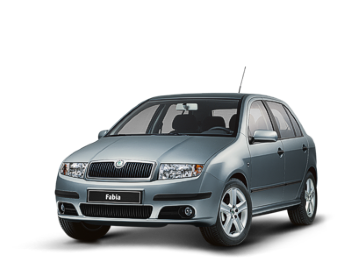
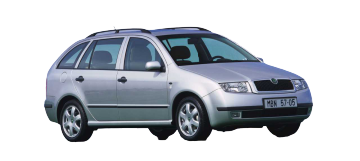

Historie modelu



Škoda Fabia je malý osobní automobil, vyráběný společností Škoda Auto. Byl oficiálně představen na 58. autosalonu ve Frankfurtu 14. září 1999 s karoserií pětidveřového hatchbacku. Byl představen jako nástupce modelu Škoda Felicia, ale rok a půl se oba vozy vyráběly souběžně. Necelý rok po hatchbacku byla představena Fabia s karoserií combi a paletu karoserií v roce 2001 uzavřela karoserie sedan. Roku 2007 byla na jarním ženevském autosalonu představena druhá generace s karoserií hatchback, což znamenalo konec výroby pro hatchback první generace. Combi druhé generace bylo představeno o půl roku později. Tímto definitivně končí výroba combi a sedanu první generace. S karoserií sedan už se v druhé generaci nepočítalo. Vozy jsou vyráběny v Mladé Boleslavi.
Prodej byl na českém trhu zahájen 4. prosince 1999 s cenou od 249 000 Kč za vůz s motorem o objemu 1,0 litru o výkonu 37 kW. V roce 2000 prošla Fabia crash testem Euro NCAP s výsledkem čtyř hvězdiček za ochranu dospělé posádky. Karoserie combi byla představena na podzim roku 2000. V roce 2001 na ženevském autosalonu varianta sedan. Dne 8. dubna 2004 opustila výrobní linku miliontá Fabia a v létě téhož roku se začala prodávat také sportovní varianta RS. 9. srpna 2004 prošla první generace faceliftem (modernizací), dostala nový přední nárazník s kulatými mlhovkami a na zadních lampách se objevilo škodovácké C, na zadních sedadlech přibyla třetí opěrka hlavy a tříbodový bezpečnostní pás pro zadní prostřední sedadlo, nový volant z druhé generace Octavie, nové potahové látky a jiné drobnosti. Výroba první generace hatchbacku byla ukončena 13. dubna 2007, výroba ostatních karosářských verzí ještě nějakou dobu probíhala souběžně.
Výbavy
Junior - nejnižší stupeň výbavy, představen v roce 2001, nabízen s karoserií hatchback, vůz měl motor 1.0 – 37 kW (později nahrazen motorem 1,2 HTP 40 kW) nebo 1.4 MPi – 44 kW (příplatek 8000 Kč), třináctipalcová kola s pneu 155/80, neměl stabilizátor přední nápravy či posilovač řízení (pouze za příplatek) a hlavním poznávacím znamením byly nelakované nárazníky (po faceliftu nazýváno jako Easy)
Classic - na rozdíl od výbavy Junior nabízela v základu např. lakované nárazníky a posilovač řízení
Comfort - po faceliftu nahrazeno názvem Ambiente br
Elegance
RS - sportovně laděná verze (vtipně označováno jako Rodinný Speciál)
Praktik - užitková verze fabie s karoserií kombi, představena v lednu 2002 měla pouze dvě sedadla, za kterými byla mříž. Zadní okna byla zaplechovaná. Měla nelakované nárazníky jako Junior
Motory
modelová řada Fabia - 1. generace disponovala řadou motorů ať vlastní produkce, nebo z koncernu VW, včetně velmi oblíbeného motoru 1,9TDI
Škoda Fabia I
| typ motoru |
roky výroby |
výkon |
| 1,0 | 1999 - 2002 | 37KW |
| 1,2 | 2001 - 2007 | 40KW |
| 1,2 | 2002 - 2008 | 47KW |
| 1,4 | 2000 - 2002 | 44KW |
| 1,4 | 1999 - 2003 | 50KW |
| 1,4 16V | 1999 - 2008 | 55KW |
| 1,4 16V | 1999 - 2008 | 74KW |
| 2,0 | 1999 - 2008 | 85KW |
| 1,4 TDI | 2005 - 2008 | 51KW |
| 1,4 TDI | 2003 - 2008 | 55KW |
| 1,4 TDI | 2005 - 2008 | 59KW |
| 1,9 SDI | 1999 - 2008 | 47KW |
| 1,9 TDI | 2000 - 2008 | 74KW |
| 1,9 TDI | 2003 - 2008 | 96KW |
Škoda Fabia I Combi
| typ motoru |
roky výroby |
výkon |
| 1,2 | 2001 - 2007 | 40KW |
| 1,2 | 2003 - 2007 | 47KW |
| 1,4 | 2000 - 2003 | 44KW |
| 1,4 | 2000 - 2003 | 50KW |
| 1,4 16V | 2000 - 2007 | 55KW |
| 1,4 16V | 2006 - 2007 | 59KW |
| 1,4 16V | 2000 - 2007 | 74KW |
| 2,0 | 2000 - 2007 | 85KW |
| 1,4 TDI | 2005 - 2007 | 51KW |
| 1,4 TDI | 2003 - 2007 | 55KW |
| 1,4 TDI | 2005 - 2007 | 59KW |
| 1,9 SDI | 2000 - 2007 | 47KW |
| 1,9 TDI | 2000 - 2007 | 74KW |
Skoda Fabia - sedan
| typ motoru |
roky výroby |
výkon |
| 1,2 | 2001 - 2007 | 40KW |
| 1,2 | 2003 - 2007 | 47KW |
| 1,4 | 2000 - 2002 | 44KW |
| 1,4 | 2000 - 2003 | 50KW |
| 1,4 16V | 1999 - 2007 | 55KW |
| 1,4 16V | 2006 - 2007 | 59KW |
| 1,4 16V | 1999 - 2007 | 74KW |
| 2,0 | 1999 - 2007 | 85KW |
| 1,4 TDI | 2005 - 2007 | 51KW |
| 1,4 TDI | 2003 - 2007 | 55KW |
| 1,4 TDI | 2005 - 2007 | 59KW |
| 1,9 SDI | 1999 - 2007 | 47KW |
| 1,9 TDI | 2000 - 2007 | 74KW |
recenze